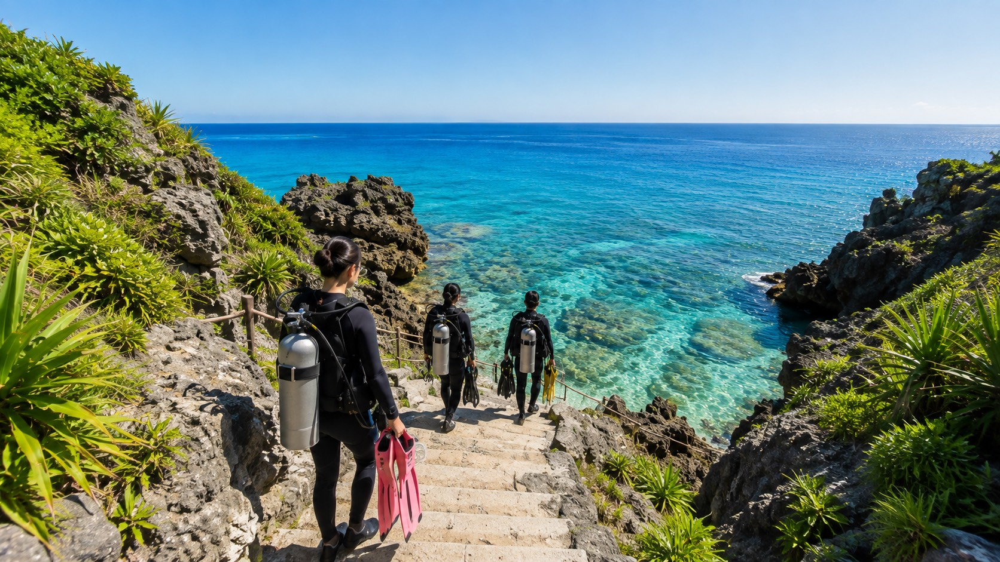
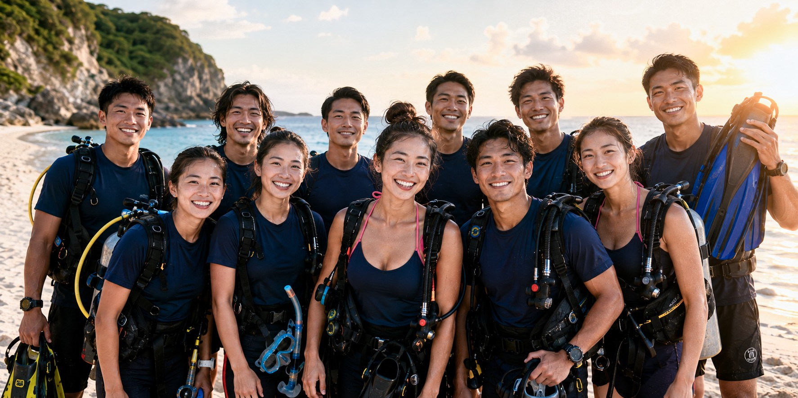
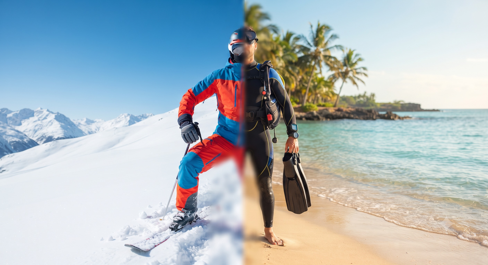
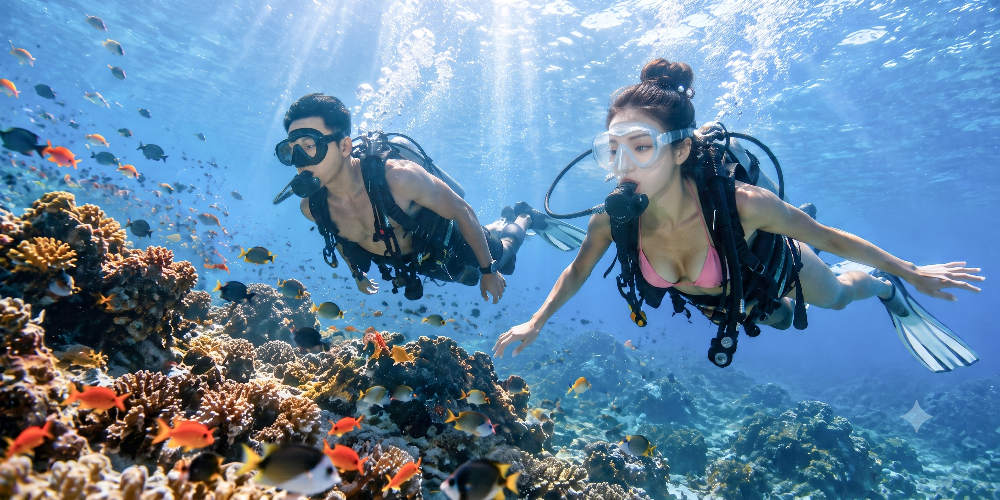
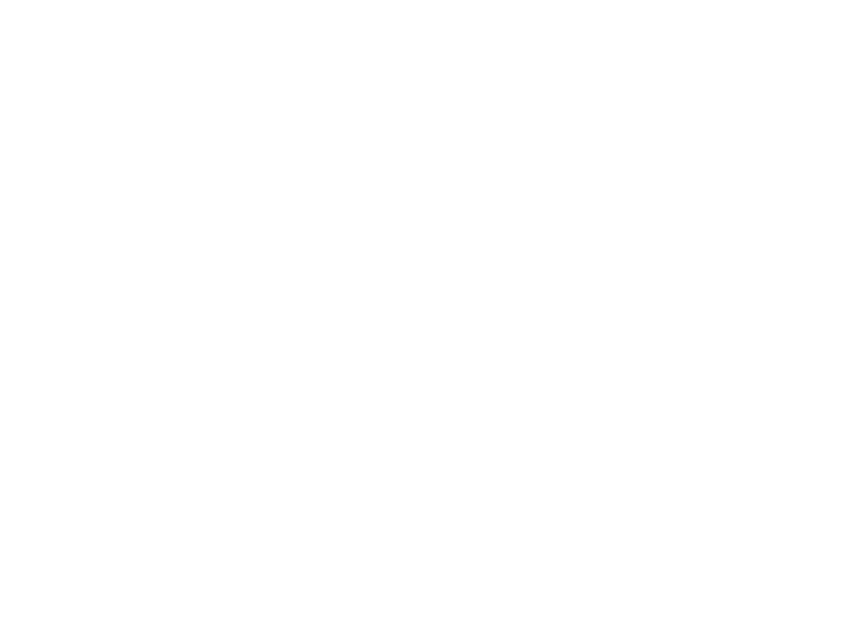

— 向下探索 —
櫻雪潛水中心為 PADI 五星認證潛水中心，擁有台北仁愛（平靜水域）＋東北角龍洞（開放水域）＋沖繩青洞（開放水域＋潛旅）三據點，自有教練全程培訓。

台北 · SY Diving Ren'ai 5
全年恆溫游泳池，PADI 平靜水域訓練專用。從裝備操作、中性浮力到緊急程序，兩次完整課程幫你打好基礎。同場地另提供游泳課程與場地出租。

新北市貢寮 · 台湾北部
台灣最成熟的開放水域潛點，台北出發僅 1 小時。PADI 開放水域考核的在地選項——適合時間有限、想在台灣完成全部訓練的學員。

桜雪沖縄 · 真栄田岬 — 沖縄県恩納村
全世界唯二的天然藍洞（另一座位於義大利卡布里島）。櫻雪沖繩據點提供 PADI 開放水域考核＋潛旅套裝，考證兼渡假，一次滿足。
不只考證——從體驗到進階，我們都有
沒證照也能潛！教練一對一帶你下海，全程陪同。
已有證照？跟櫻雪教練探索沖繩最美潛點。
不背氣瓶，輕鬆浮游青之洞窟。親子友善首選。
以上課程定價請洽 LINE 諮詢，我們會根據人數與日期提供報價。

櫻雪已取得 PADI 頒證資格，從課程到發照全程自有體系。終身有效、全球通用。
基本潛水技能、裝備操作、安全程序。PADI 教練一對一指導，全年恆溫。
中性浮力控制、緊急程序演練、水下導航。確認你已準備好面對開放水域。
在真實海洋完成考核。選龍洞（當日往返）或沖繩（潛旅考證一次滿足）。
青の洞窟 · 4 天 3 夜
NT$28,900起
每日 4 梯次 · 2 位教練輪班 · 接送半徑 8km
自有 4 台接駁車 · 充足停車位 · 含接送或自行抵達
櫻雪自有游泳池全年恆溫，除 PADI 平靜水域訓練外，另提供游泳課程與場地出租
台北市大安區仁愛路四段 130 號 · 9 水道 · 25m · 水深 1.2m · 免戴泳帽
點擊查看完整介紹 →

冬はスキー、夏はダイビング。20 位雙棲教練，同一個團隊陪你四季。
揪團 4 人以上每人折 1,000 · 舊毒友再折 300 · 最多折 1,300
潛水安全是我們的第一優先。活動前請確認以下事項。
有心臟病、氣喘、懷孕、癲癇或近期手術者，
請務必於活動前告知教練。
完整健康聲明書將於預約後提供。
潛水前 8 小時請勿飲酒。
潛水後 18-24 小時內請勿搭機。
教練有權基於安全考量終止活動。
因天候或海況不佳，櫻雪保留取消權利並全額退費。
客人取消請於 3 天前通知，當日取消恕不退費。
可以。PADI 只要求不靠漂浮器材在水面待 10 分鐘，並能連續游泳 200 公尺（不限姿勢、不限時間）。重點是不恐慌、能在水中照顧自己。
可以。戴隱形眼鏡下水，或租用有度數的面鏡。報名時備註度數即可。
終身有效，全球通用。若超過半年未潛水，建議先參加 Refresher 複習課程。
最低 10 歲可取得 Junior OW 證照，15 歲以上可取得標準 OW 證照。上限無硬性規定，通過健康評估即可。
沖繩方案為 4 天 3 夜。包含台北游泳池訓練、沖繩開放水域考核、機票住宿。
當然。兩人以上同行另有優惠。揪團 4 人以上每人現折 1,000 元。
可以。仁愛游泳池全年恆溫 28°C，冬天照常開課。沖繩也全年可潛。
不需要。課程費用已含全套潛水裝備使用。若自有裝備可折抵部分費用。

櫻雪潛水中心為 SAKURA YUKI 集團旗下 SY Dive 品牌
另設有滑雪中毒者／櫻雪滑雪學校（SY Snow）及櫻雪游泳池／游泳學校（SY Swim）

我們正在尋找熱愛海洋、喜歡與人交流的夥伴。
歡迎潛水教練、行政人員、社群小編加入櫻雪團隊。
或將履歷寄至：hr@sydiving.com.tw
潛水安全，我們為你把關
櫻雪潛水中心已依法投保公共意外責任險。
保障範圍涵蓋店內活動及泳池場地，
提供學員與訪客基本安全保障。
所有沖繩及龍洞潛水活動均代保潛水險。
涵蓋潛水意外醫療、減壓症治療及
緊急後送，讓您安心探索水下世界。
出國潛水建議自行投保旅平險＋
DAN (Divers Alert Network) 潛水專屬險。
DAN 官網 →
詳細保險內容及理賠範圍，請洽 LINE 客服索取保單條款說明。